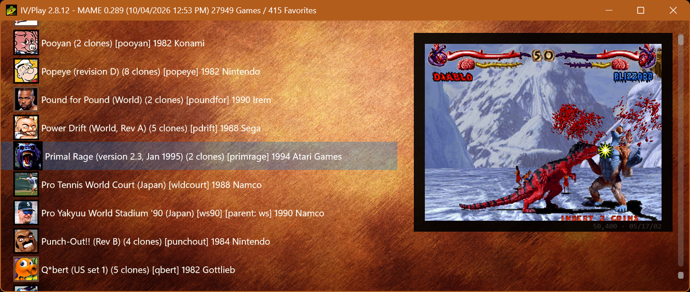

A high‑performance, keyboard driven front-end for MAME. Designed for today's multi‑core, GPU‑powered PCs, its DirectX engine delivers smooth scrolling, instant artwork, and zero‑lag navigation. Browse, filter, and launch thousands of titles with fluid responsiveness on modern Windows systems.
Est. 8/11/1998 © john iv
IV/Play (pronounced 'Four Play') is a keyboard-driven front-end for MAME™ in the tradition of MAMEUI. Conceived in 2006 and commissioned in 2011 by John IV of the original MAMEUI team, it keeps MAMEUI's navigation and shortcuts and rebuilds everything underneath for modern Windows PCs: a DirectX 11 / Direct2D renderer, a self-contained Native AOT executable, and a library that is ready to browse about a second after launch.
IV/Play launches MAME or HBMAME; it leaves the emulator's own configuration to the emulator.
capcom late 90s no clones, 2 screens lightgun or "king of fighters", and mix in field searches such as manufacturer:sega workingstatus:imperfect when you want precision.name:zaxxon finds the arcade game and its home ports.genre:, history:, first MAME version) and one keypress away in the DAT Peek overlay.IV-Play.exe and e_sqlite3.dll into your MAME folder, alongside mame.exe.IV-Play.exe. It finds mame.exe (or asks you to locate it) and builds its database and caches on first run.F1 to configure, Ctrl+F to filter and Enter to play. Using HBMAME or a differently named build? F4 links any executable.| Key | Function |
|---|---|
Enter |
Launch the selected game. |
Ctrl+F |
Filter the list. |
F1 |
Configuration. |
Alt+P / Tab |
Change view: list, large icons, grid or flat. |
Alt+Ins / Del |
Switch game list: Full, Arcade Only, Available, your own lists. |
Ctrl+D |
Add or remove a favorite. |
~ (Tilde) |
DAT Peek: history and MAMEinfo for the selected game. |
Alt+Enter |
Properties of the selected game. |
Ctrl+B / F9 |
Benchmark the selected game / run the benchmark suite. |
F5 |
Refresh from MAME and rebuild caches. |
Most keys can be rebound in F1. The full keyboard reference is in the User Guide.